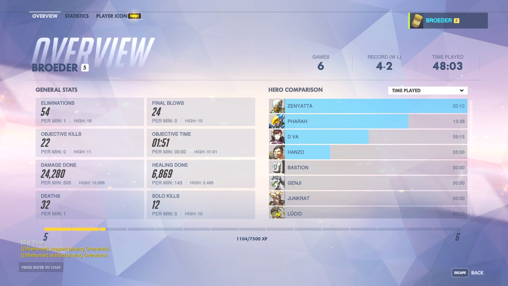

AFLOW Webpage Redesign
Project Duration:
June 2018 - August 2018
Tools Used:
HTML, CSS, C++, Sketch
Personal Contributions:
- Sketching
- Wireframing
- Coding
Team Members:
- Eric Gossett
- Cormac Toher
- John Paul Oses
Project Summary:
During the summer of 2018, I worked for Dr. Stefano Curtarolo at the Center of Materials Genomics at Duke University. His research group is a mix of 13 Graduate students and Postdoctoral Asssociates who all contribute to the group's main project, aflow.org. AFLOW is a high throughput materials discovery database with over two million material compounds and more than three-hundred million calculated properties. I was hired in order to redesign part of aflow.org, specifically working on the materials entry page. This page is a part of the MendeLIB Search application within AFLOW. This app allows users to view the specifics of any material found in the database. On the materials entry page, users can view the composition of the material at a molecular level and learn more about the structures and calculated properties that pertain to that material. I worked alongside a web developer in order to improve the information architecure on this page as well as redesign the presentation of all calculated properties located on this page.
My Approach:
Research
Secondary research to learn more about AFLOW and its functionalities.
Ideation
Sketched a number of possible designs that could fit within the materials entry page of AFLOW.
Wireframing
Translated sketches into higher fidelity mock-ups for feedback on best design for implementation.
Coding
Developed solution using HTML/CSS and used C++ to implement final design onto live webpage.
Research
I began my design process with some secondary research to learn more about the field I was working in and the product I was working with. My secondary research consisted of reading research papers produced by the research group I was working with. These papers addressed the field of Materials Science and Materials Discovery, common pain points identified in these fields of study, as well as the group's solution to these pain points (AFLOW). Conducting this research allowed me to gain a better understanding of AFLOW, its capabilites through the different web applications it offers, and the users of this site.
Ideation
Along with secondary research, I jumped right into ideation. I started ideation with a heavy amount of sketching. I had an array of different designs that I thought could work for this page. These designs included integrating tabs, accordian menus, cards, and data tables in order to improve the presentation of all the calculated properties on this page.
From here, I began receiving feedback on my some of my ideas/sketches. The most important takeaways from my feedback that drove the rest of my design process included:
- No information can be hidden from the user
- Overall design must be able to handle different types of calculations and numbers
- Design should be responsive and could be viewed on any device
This feedback drove me to gather inspiration from other sources that could possibly help feed my design. My main source of inspiration came from a popular video game known as Overwatch. This game is very well designed, not just in terms of gameplay, but in its UI components as well. Below you will find the Player Overview screen that I used to help drive my wireframing.
Wireframing
I created several black and white mock-ups of the design changes I wanted to make to the materials entry page of aflow.org. I then presented these to the project manager and web developer for additional feedback.
Overall, the feedback I received was positive and it assured me I was heading in the right direction. However, it was hard to tell if this design would work well or not, as there were many types of information this design needed to support. I began iterating on my design, and putting more detail into how this would actually look with real outputs.
This design was approved by the project manager and web developer and lead me to begin developing my solution.
Coding
Using HTML and CSS, I coded my design from scratch. I uitilized flexbox to help align all of the cards for each type of property and placed breakpoints to make sure these cards would respond properly if the browser size was changed.
Once the HTML/CSS were set, I needed to actually put my code into the iFrame that this page uses to generate content on the fly. The body of this iFrame was an extensive C++ file, where I had to code in all the HTML I produced previously. There were also a number of checks that needed to be made for specific properties, as different materials hold different properties.
After the C++ file was complete, I melded it to the newest version of AFLOW and my design was ready to go live.
Final Design:
Below is a live look at my solution in action. If you were to go to aflow.org, click on MendeLIB search, pick a combination of elements, and click on any one of the results, my design will be there. AFLOW generates pages like these on the fly, as there are a number of calculations that need to be done for the material you select. AFLOW then hydrates the pages with the necessary information on the material you selected. I was responsible for redesigning from "Calculation Details" to the end of the page. If you adjust the size of your browser window while on this page, you will also notice that my design is responsive!